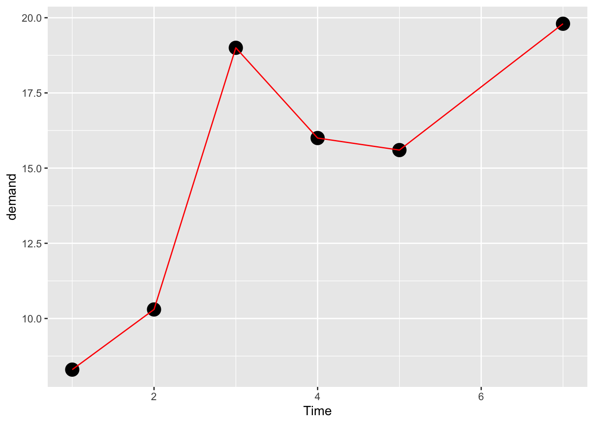
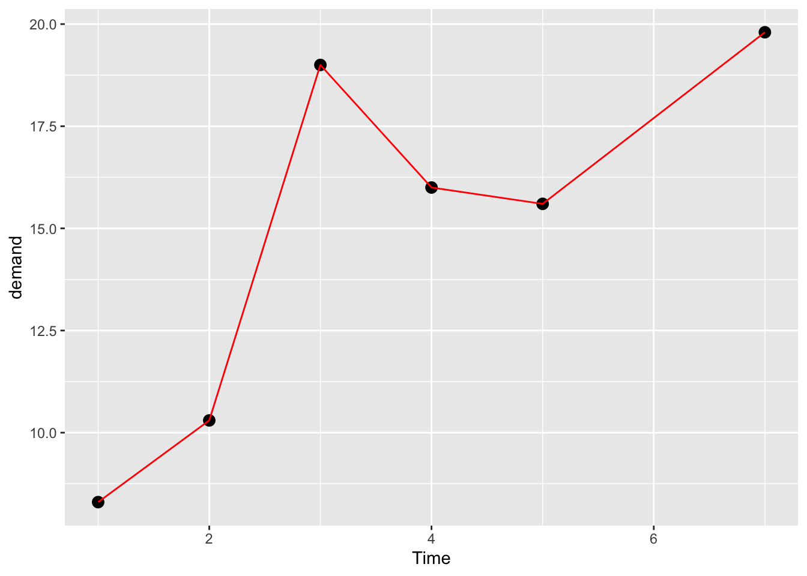
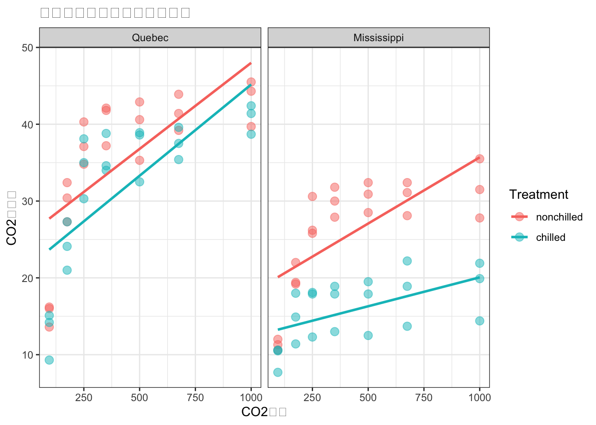
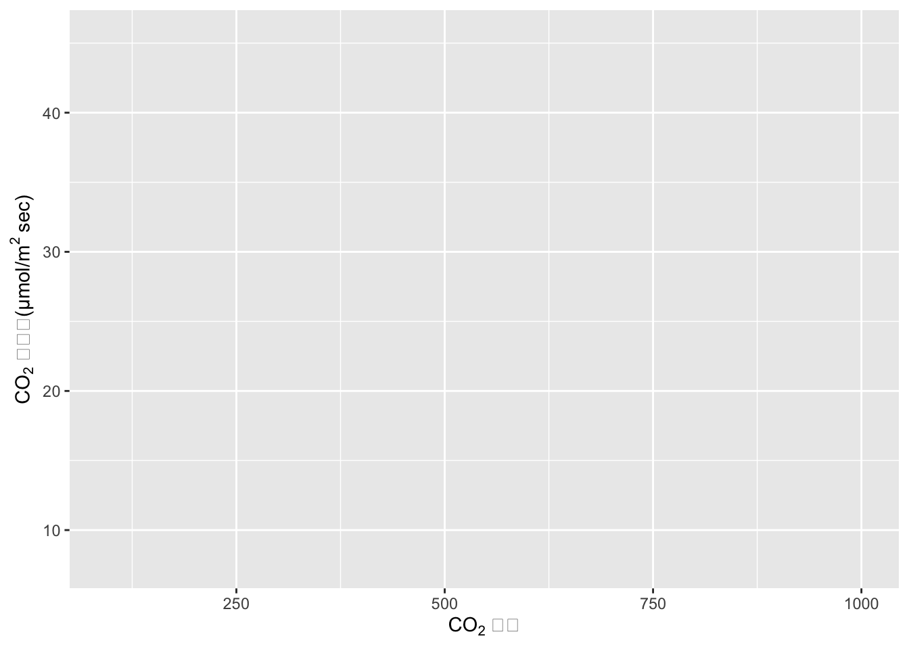
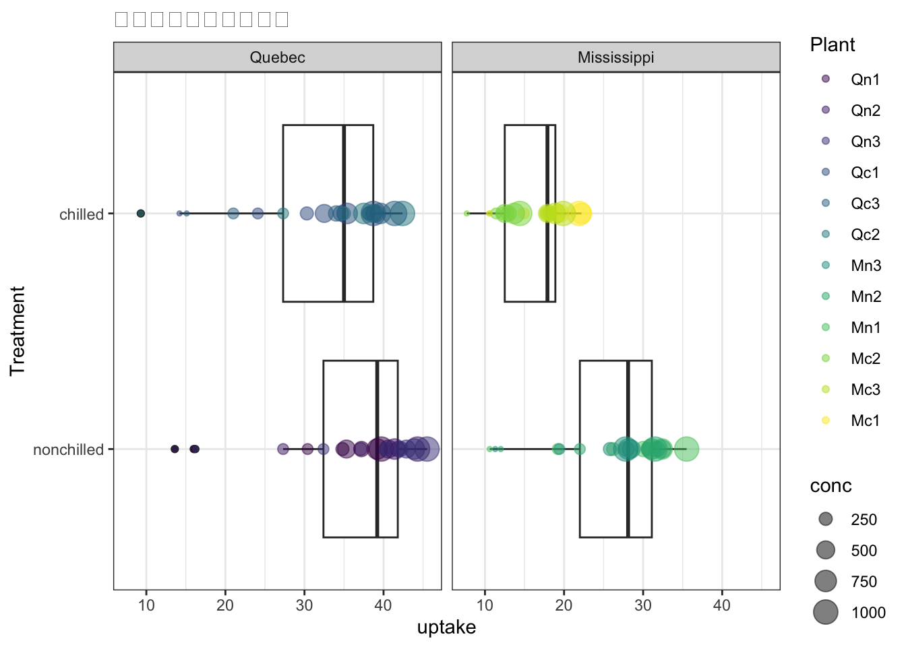
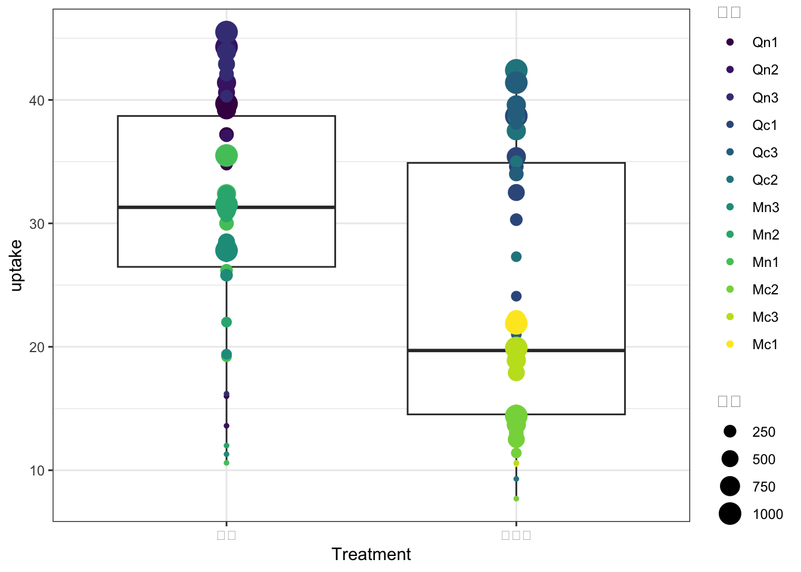
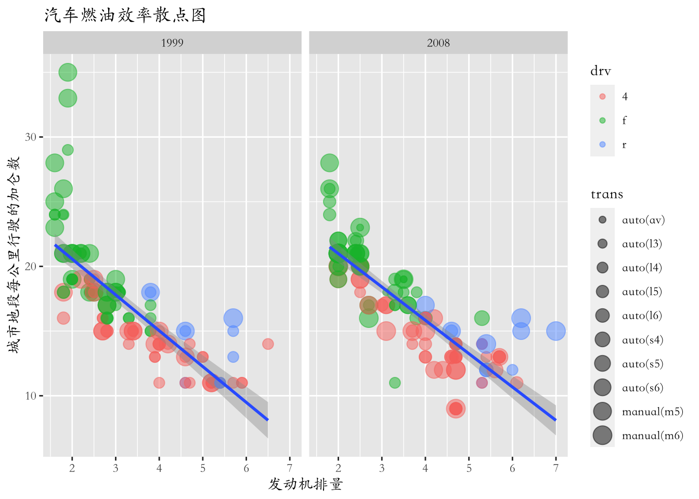
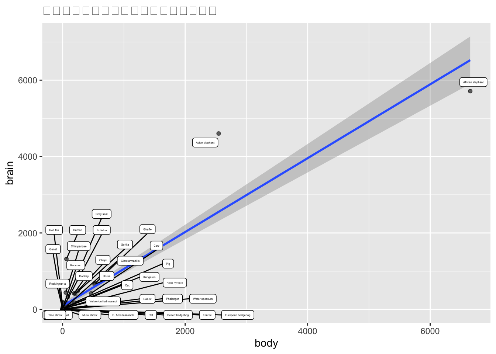
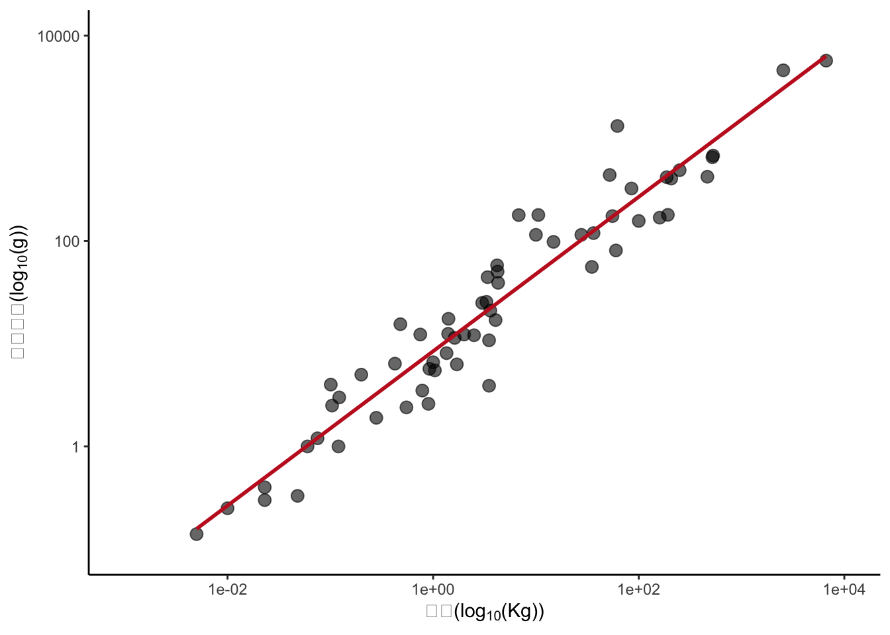

Code
library(showtext)
showtext_auto(enable=T)
font_add("STKaiti","/Library/Fonts/stkaiti.ttf")library(showtext)
showtext_auto(enable=T)
font_add("STKaiti","/Library/Fonts/stkaiti.ttf")mytheme <- theme(
text = element_text(size = 16,
family = "STKaiti"),
axis.title = element_text(size = 20)
)# 查看数据
data("BOD")library(ggplot2)ggplot(data = BOD,
mapping = aes(x = Time,y = demand))+
geom_point(size=5)+
geom_line(color="red")
ggplot(BOD,aes(Time,demand))+
geom_point(size = 3)+
geom_line(color = "red")
ggplot(CO2,aes(conc,uptake,
color = Treatment))+
geom_point(size=3,alpha=0.5)+
geom_smooth(method = "lm",formula = y~x,se=F)+
facet_wrap(~Type)+
labs(x="CO2浓度",y="CO2摄取量",title = "不同地区植物二氧化碳摄取量")+
theme_bw()
解决标注的上下标问题
ggplot(CO2,aes(conc,uptake,
color = Treatment))+
labs(x=expression("CO"[2]~"浓度"),
y=expression("CO" [2]~"摄取量(μmol/m"^2~"sec)"))
ggplot(CO2,aes(Treatment,uptake))+
geom_boxplot()+
geom_point(aes(size = conc,
color = Plant),
alpha = 0.5)+
facet_wrap(~Type)+
coord_flip()+
theme_bw()+
labs(title = "耐寒处理与非耐寒处理")
设置图例标题为中文
ggplot(CO2,aes(Treatment,uptake))+
geom_boxplot()+
scale_x_discrete(labels=c("耐寒","非耐寒"))+
geom_point(aes(size = conc,color=Plant))+
guides(size=guide_legend(title = "浓度"),color=guide_legend(title = "植物"))+
theme(text = element_text(family = "STKaiti"))+
theme_bw()
ggplot(mpg,aes(displ,cty))+
geom_point(aes(color=drv,size = trans),alpha=0.5)+
geom_smooth(formula = y~x,method = "lm")+
facet_wrap(~year,nrow = 1)+
labs(x="发动机排量",y="城市地段每公里行驶的加仑数",title="汽车燃油效率散点图")+
theme(text = element_text(family = "STKaiti"))
library(MASS)knitr::kable(mammals[1:15,])| body | brain | |
|---|---|---|
| Arctic fox | 3.385 | 44.50 |
| Owl monkey | 0.480 | 15.50 |
| Mountain beaver | 1.350 | 8.10 |
| Cow | 465.000 | 423.00 |
| Grey wolf | 36.330 | 119.50 |
| Goat | 27.660 | 115.00 |
| Roe deer | 14.830 | 98.20 |
| Guinea pig | 1.040 | 5.50 |
| Verbet | 4.190 | 58.00 |
| Chinchilla | 0.425 | 6.40 |
| Ground squirrel | 0.101 | 4.00 |
| Arctic ground squirrel | 0.920 | 5.70 |
| African giant pouched rat | 1.000 | 6.60 |
| Lesser short-tailed shrew | 0.005 | 0.14 |
| Star-nosed mole | 0.060 | 1.00 |
p1 <- ggplot(mammals,aes(x = body,y = brain))+
geom_point(alpha=0.6)+
geom_smooth(method = "lm")+
labs(title = "陆地哺乳动物体重与大脑重量之间的关系")p1+ggrepel::geom_label_repel(
aes(label=rownames(mammals)),size=1,max.overlaps = 100
)
考虑到极端值对线性回归结果的影响，非洲象和亚洲象的影响，对两个变量同时进行对数转换
ggplot(mammals,aes(x=body,y=brain))+
geom_point(alpha=0.6,size=3)+
coord_fixed(xlim = c(10^-3,10^4),ylim = c(10^-1,10^4))+
scale_x_log10(
expression("体重(log"["10"]*"(Kg))",
breaks = tran_breaks("log10",function(x) 10^x),
labels=trans_format("log10",math_format(10^.x)))
)+
scale_y_log10(
expression("平均脑重(log"["10"]*"(g))",
breaks = tran_breaks("log10",function(x) 10^x),
labels=trans_format("log10",math_format(10^.x)))
)+
geom_smooth(method = "lm",col="#C42126",se=FALSE,linewidth=1)+
theme_classic()